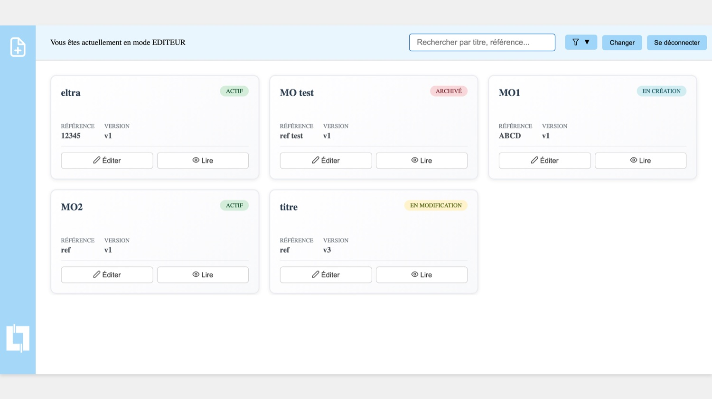

Modes opératoires Projet réalisé pour Legrand : remplacer Excel par un éditeur web
Un éditeur web de modes opératoires industriels, développé en équipe de 5 pour Legrand. Ma part : la base de données, la sécurité et la recherche.
🎯 Le projet
Chez Legrand, les modes opératoires industriels sont principalement réalisés sous Excel : saisie et mise en forme longues, gestion des images et des annotations compliquée, rendu hétérogène, document difficile à faire évoluer selon les besoins du terrain. Notre projet de SAE digitalise cette création : une application métier plus simple à utiliser, plus claire pour les opérateurs, pour générer, éditer, visualiser et enregistrer les modes opératoires.
Contexte
Projet de SAE de 2ème année de BUT Informatique, réalisé en équipe de 5 étudiants pour Legrand (décembre 2025 – avril 2026). Le fil conducteur : produire un outil « le plus simple possible et le plus clair » pour les équipes terrain.
Mon rôle
- Base de données : liaison entre le back et SQL Server avec TypeORM, entités et enregistrement des modes opératoires et de leurs blocs
- Sécurité : contrôle d'accès, protection contre les injections SQL, journalisation, tentatives de connexion, chiffrement des blocs et tests automatisés de sécurité
- Recherche : barre de recherche avec historique et restrictions d'accès pour les lecteurs
- Environ 60 commits sur les 390 du dépôt
📸 Aperçu

🧩 Ce que permet l'application
Structurer un document
- Étapes sous forme de blocs, avec titre, référence et informations de nomenclature
- Import d'un tableau copié depuis Excel qui génère automatiquement les étapes
- Blocs réorganisables en glisser-déposer
Enrichir les étapes
- Texte mis en forme (format, taille, couleur) et nombre de répétitions par bloc
- Images et formes : lignes, flèches, cercles, entourages, avec calques, couleurs et rognage d'image (Fabric.js)
Éditer ou consulter
- Mode éditeur pour créer et modifier, mode lecteur pour consulter avec une présentation adaptée
- Passage d'un mode à l'autre sans devoir sauvegarder au préalable
- Enregistrement par bouton ou raccourci Ctrl+S, avec confirmation
Retrouver un document
- Liste des modes opératoires sur l'écran d'accueil
- Barre de recherche et historique de recherche
- Accès restreint pour les utilisateurs qui n'ont qu'un rôle de lecteur
⚙️ Stack technique
| Composant | Choix | Pourquoi |
|---|---|---|
| Interface | Vue 3, TypeScript, Vite, PrimeVue, Pinia | Composants prêts à l'emploi pour l'éditeur, état partagé (historique de recherche) avec Pinia |
| Éditeur graphique | Fabric.js | Formes, flèches, calques et rognage d'image sur canvas |
| API | Express, TypeScript | Routes des modes opératoires, authentification, validation des données |
| Base de données | SQL Server, TypeORM | Modes opératoires et blocs persistés via des entités typées |
| Sécurité | JWT, express-rate-limit, express-validator, Winston | Jetons, limitation de débit, validation des entrées, journalisation |
| Tests | Jest | Tests de sécurité, de base de données (dont un test de charge) et de l'historique de recherche |
🔧 Points techniques (ma partie)
Ce que j'ai concrètement pris en charge, d'après l'historique du dépôt.
💡 Ce que ce projet m'a appris
- Travailler à 5 sur un même dépôt : branches, pull requests, fusions, répartition du travail
- Penser la sécurité dès la conception d'une application métier, pas à la fin
- Concevoir des tests qui protègent les règles sensibles (accès, jetons, injections)
- Écouter un besoin terrain (remplacer Excel) et en déduire une interface simple